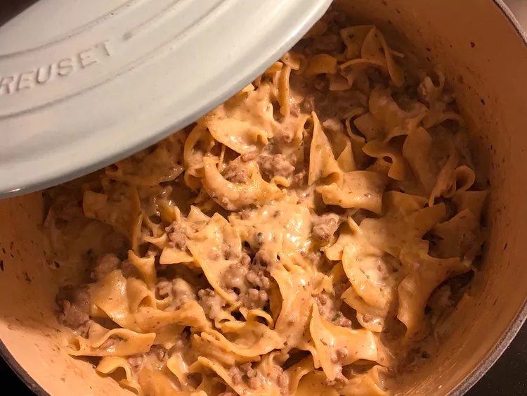

Beef Stroganoff
Description
This one-pot ground beef stroganoff is creamy and delicious! My family loved the boxed version of ground beef stroganoff, but we have done away with processed foods. I created this out of necessity, and they don't miss the box at all!
Ingredients
- 1 pound ground beef
- 1 ½ tablespoons cornstarch
- 1 ½ teaspoons salt
- 1 ½ teaspoons dried parsley
- 1 teaspoon garlic powder
- 1 teaspoon onion powder
- 1 ¾ cups milk
- 1 ¼ cups beef stock
- 1 (8 ounce) package egg noodles
- ½ cup sour cream
- ¼ cup freshly grated Parmesan cheese
Steps
- Heat a large skillet over medium-high heat. Cook and stir beef in the hot skillet until browned and crumbly, 5 to 7 minutes; drain.
- Combine cornstarch, salt, parsley, garlic powder, and onion powder in a small bowl.
- Pour cornstarch mixture, milk, beef stock, and egg noodles into the skillet; bring to a boil. Cover, reduce heat, and simmer, stirring occasionally, until noodles are tender, about 5 minutes. Stir in sour cream and Parmesan cheese until just combined.